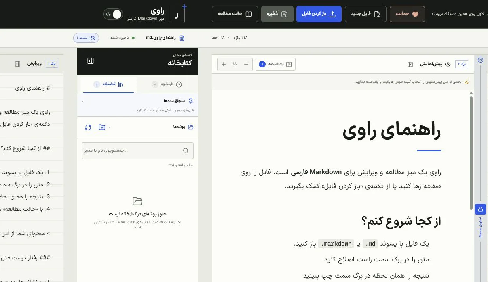
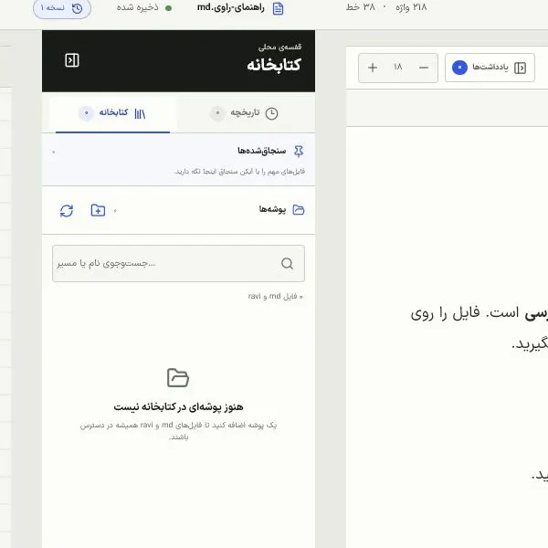

در حال آمادهکردن فایل معرفی…
نسخهٔ وب؛ بدون نصب
Markdown فارسی؛ خوانا و مرتب.
فایلهای md همان متنهای سادهای هستند که ابزارهای هوش
مصنوعی زیاد تولید میکنند؛ اما فارسی و انگلیسی در بسیاری از برنامهها
کنار هم درست نمایش داده نمیشوند. راوی کمک میکند
فایلهای Markdown فارسی را در مرورگر یا روی دسکتاپ، مرتب و خوانا
ببینید و ویرایش کنید.
- فارسی و انگلیسی بدون بههمریختگی
- فایلها روی دستگاه شما
- نسخهٔ وب و دسکتاپ، رایگان

پیش از راوی
مارکدان چیست؟
فایلهای md متنهای سادهای هستند که میتوانند
عنوان، فهرست، پیوند و متن پررنگ داشته باشند و بسیاری
از ابزارهای هوش مصنوعی هم با همین ساختار کار میکنند. وقتی فارسی و
انگلیسی کنار هم قرار میگیرند، جهت متن ممکن است بههم بریزد.
راوی جهت هر بخش را درست تشخیص میدهد تا فایل را مرتب،
خوانا و راحتتر ویرایش کنید.
-
فایل سبک و ماندگار
فایل
.mdمتن ساده است و در ابزارهای مختلف باز میشود. - مناسب کار با هوش مصنوعی بسیاری از ابزارهای هوش مصنوعی پاسخها و مستندات را با همین ساختار میسازند.
تجربهٔ زنده
Markdown فارسی را همینجا امتحان کنید.
متن این معرفی را تغییر دهید. منبع این بخش یک فایل
landing.md است؛ هر تغییری فقط در همین مرورگر پیشنمایش
میشود و به جایی فرستاده نمیشود.
برگهٔ زنده
در حال بارگذاری متن…
ویرایش محلی است؛ محتوای این کادر ارسال یا ذخیره نمیشود.
متن اصلی بدون تغییر است.
از شروع سریع تا کار عمیق
در مرورگر شروع کنید؛ روی دسکتاپ ادامه دهید.
نسخهٔ وب برای باز کردن، ویرایش و مطالعه آماده است؛ نسخهٔ دسکتاپ اتصال پوشهها و کار مستقیم با فایلهای سیستم را هم اضافه میکند.
کتابخانهای که روی دستگاه میماند
در نسخهٔ وب، فایلهایی که باز میکنید در کتابخانهٔ همان مرورگر میمانند. در نسخهٔ دسکتاپ میتوانید پوشهها و زیرپوشهها را هم با اجازهٔ خودتان متصل کنید. مسیر و محتوای فایل به اینترنت فرستاده نمیشود.
- فایلهای اخیر در نسخهٔ وب
- اتصال پوشه و زیرپوشه در نسخهٔ دسکتاپ
- جستوجو و سنجاق فایلهای پراستفاده


متن، وقتی باید فقط خوانده شود
حالت مطالعه ابزارهای اضافی را کنار میزند، نوشته را روی یک برگهٔ خوانا مینشاند و فهرست فصلها را از تیترهای Markdown میسازد.
- فهرست خودکار فصلها
- تنظیم اندازهٔ نوشته
- نمای مناسب متنهای طولانی
Mermaid، بخشی از خود سند
نمودار را بهصورت بلوک استاندارد Mermaid نگه دارید و در استودیوی فارسی با پیشنمایش زنده، بزرگنمایی، جابهجایی و نمونههای آماده ویرایش کنید.
- منبع استاندارد و قابلحمل
- نمایش امن و محلی
- نمای تمامصفحه برای بررسی جزئیات

حریم خصوصی، نه یک گزینهٔ اضافه
فایل روی همان دستگاه میماند.
- بدون حساب کاربری
- بدون آپلود محتوای سند
- اتصال پوشه در دسکتاپ، فقط با اجازهٔ شما
- تنظیمات و آخرین نوشته روی همان دستگاه
راههای استفاده
در مرورگر یا روی دسکتاپ.
نسخهٔ وب بدون نصب آماده است. برای اتصال پوشهها و باز کردن مستقیم فایلها از سیستمعامل، نسخهٔ Windows یا Linux را دریافت کنید.
نسخهٔ وب
بدون نصب · آماده در مرورگر
Windows
نصب آسان · نسخهٔ 1.3.0 · ۳٫۳۶ مگابایت
جزئیات و بررسی اصالت فایل
- معماری
- x64
- نوع فایل
- EXE
x64 برای بیشتر رایانههای امروزی است. کد SHA256 کمک میکند مطمئن شوید فایل دانلودشده دقیقاً همان نسخهٔ رسمی است.
88B5A891878AE1F29692C1E291DFB5DE7E31B18ABE52EA1D79E9D0DBD31884C3
macOS
برای رایانههای Apple silicon و Intel
Linux
بستهٔ قابلحمل · نسخهٔ 1.0.0 · ۲۳۳٫۶۲ مگابایت
جزئیات و بررسی اصالت فایل
- معماری
- x64
- نوع فایل
- tar.gz
x64 برای بیشتر رایانههای امروزی است. کد SHA256 کمک میکند مطمئن شوید فایل دانلودشده دقیقاً همان نسخهٔ رسمی است.
0C363E8F39D479F4B983A7C5DFA8B43D40DE3039B8F0FA98FBF7D168AA59BCA2
توسعهٔ مستقل
راوی رایگان میماند.
حمایت داوطلبانهٔ شما برای نگهداری نسخهٔ وب، توسعهٔ راوی، ساخت نسخههای دسکتاپ و هزینههای زیرساخت پروژه صرف میشود. مبلغ و متن پیام را خودتان در صفحهٔ امن دارمت انتخاب میکنید.